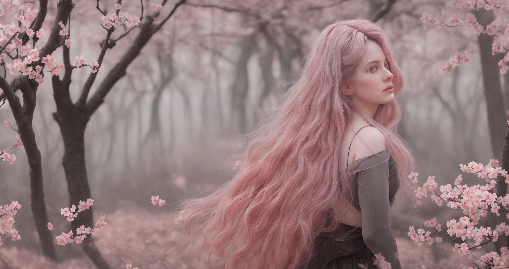

Pinkism
Die blühenden Kirschbäume und ihre zarten, rosafarbenen Blüten Schönheit und einen Hauch von Melancholie.
Die Szenerie hat eine beruhigende, fast hypnotische Wirkung, die den Betrachter in ihren Bann zieht und in eine andere Welt entführt. Gleichzeitig liegt eine unterschwellige Spannung in der Luft, als ob ein verborgenes Geheimnis darauf wartet, entdeckt zu werden.
Das sanfte Rosa und die geschwungenen Äste der Bäume schaffen ein visuelles Gedicht, das Schönheit und Vergänglichkeit in einem Atemzug vereint. Die Farbtöne und die feinen Details erzeugen ein Bild von zerbrechlicher Eleganz und zeitloser Anmut. Der Kontrast zwischen den zarten Blüten und den knorrigen Ästen der Bäume betont die Dualität von Leben und Tod, Wachstum und Verfall.
Die Frau in der Szene verkörpert eine Mischung aus Sanftheit und Stärke, ihre anmutige Erscheinung steht im Kontrast zu der rauen und geheimnisvollen Umgebung. Ihre Haltung und der Ausdruck in ihren Augen lassen auf eine Geschichte von verlorener Liebe, unerfüllten Träumen oder einer tiefen inneren Suche schließen. Insgesamt vermittelt das Bild eine dramatische Mischung aus Sanftheit und Stärke, Einsamkeit und Mysterium, die eine tiefgreifende emotionale Resonanz hinterlässt.
Der Betrachter wird eingeladen, sich in die feine Balance von Schönheit und Melancholie zu vertiefen und die unausgesprochenen Geschichten, die in den Schatten lauern, zu entdecken.
Alle Personen und Kulissen sind fiktiv. Alle Bilder sind KI generiert.
Die Szenerie hat eine beruhigende, fast hypnotische Wirkung, die den Betrachter in ihren Bann zieht und in eine andere Welt entführt. Gleichzeitig liegt eine unterschwellige Spannung in der Luft, als ob ein verborgenes Geheimnis darauf wartet, entdeckt zu werden.
Das sanfte Rosa und die geschwungenen Äste der Bäume schaffen ein visuelles Gedicht, das Schönheit und Vergänglichkeit in einem Atemzug vereint. Die Farbtöne und die feinen Details erzeugen ein Bild von zerbrechlicher Eleganz und zeitloser Anmut. Der Kontrast zwischen den zarten Blüten und den knorrigen Ästen der Bäume betont die Dualität von Leben und Tod, Wachstum und Verfall.
Die Frau in der Szene verkörpert eine Mischung aus Sanftheit und Stärke, ihre anmutige Erscheinung steht im Kontrast zu der rauen und geheimnisvollen Umgebung. Ihre Haltung und der Ausdruck in ihren Augen lassen auf eine Geschichte von verlorener Liebe, unerfüllten Träumen oder einer tiefen inneren Suche schließen. Insgesamt vermittelt das Bild eine dramatische Mischung aus Sanftheit und Stärke, Einsamkeit und Mysterium, die eine tiefgreifende emotionale Resonanz hinterlässt.
Der Betrachter wird eingeladen, sich in die feine Balance von Schönheit und Melancholie zu vertiefen und die unausgesprochenen Geschichten, die in den Schatten lauern, zu entdecken.
Alle Personen und Kulissen sind fiktiv. Alle Bilder sind KI generiert.


